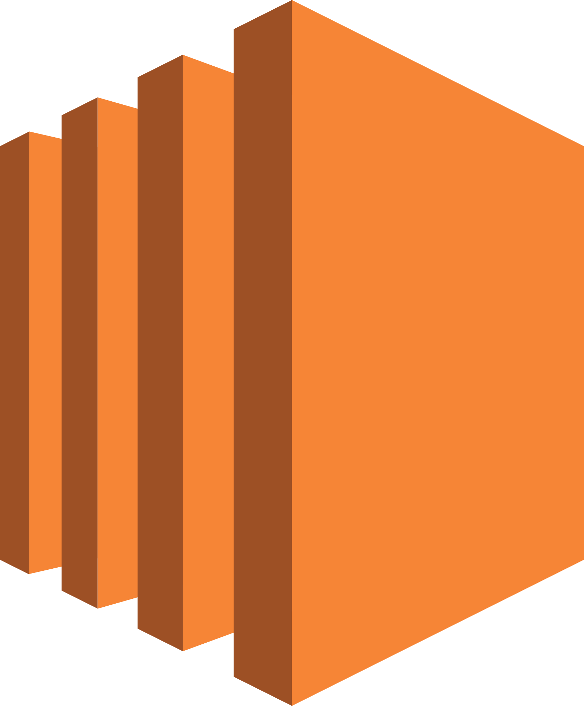
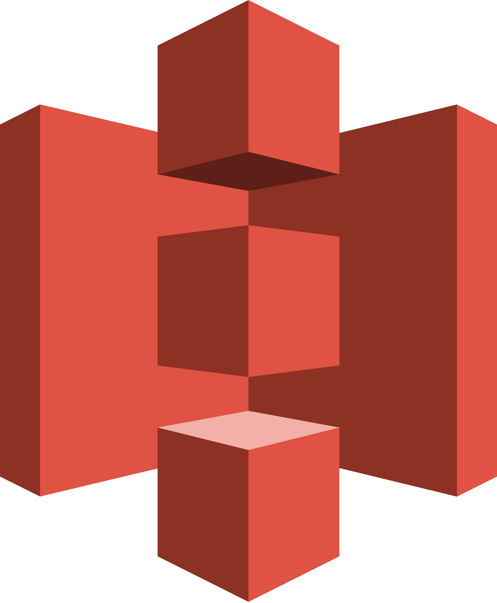
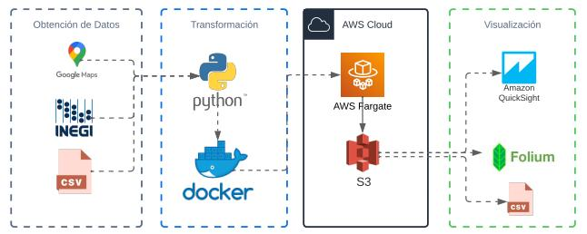

Alex Rodriguez Villavicencio
Data Scientist / Machine Learning Engineer
Experiencia trabajando en proyectos con Python, SQL, ETL's, Machine Learning, Deep Learning,Visión por Computadora y API's de microservicio de aprendizaje automático.
Ganador de la Hackaton Bbva 2022 para el reto PyME. Y Ganador de la Hackaton 2022 IBM Quantum.
Con pensamiento creativo, resolución de problemas, trabajo en equipo, comunicación y resiliencia.
Tecnologías y Herramientas
Languages
 Python
Python
 Javascript
Javascript
Cloud
DevOps
 Git
Git
 Docker
Docker
 Jenkins
Jenkins
Web Framework
 Django
Django
Machine Learning
 Scikit-Learn
Scikit-Learn
SQL
 PostgreSQL
PostgreSQL
NoSQL
Visualization
Creación rápida de reportes visuales en power bi y python a través de streamlit, además de demostrar habilidades avanzadas de power bi, conectando los informes creados a los dataflows, y la aplicación modelos de auto ML al Power BI dataflow y predicción en Power BI Desktop.
Uso de diferentes tecnologías como keras, tensorflow y técnicas como Redes Neuronales, Algoritmos genéticos, Políticas de gradiente, Máquinas de Boltzman, Aprendizaje por refuerzo profundo, Neuroevolución profunda y Visión por Computadora. Dentro de mis proyectos como la detección de tumores craneales en radiografías, detección de expresiones faciales humanas, creación de arte y pintura usando IA, optimización de estrategias de marketing, lanzamiento de campaña de anuncios personalizadas, sistemas de recomendación, optimización de procesos (flujo de almacén de ecomerce), entre otros.
Creación de pipelines, ETL, sistemas distribuidos, nube, SQL, python, airflow, spark, aws, big data.
Creación de Apis, juegos en navegador y aplicaciones web con tecnologías como Django, FastApi, Javascript, HTML y CSS.
Mapa de Emisiones CO2
Data Engineer | FullStack
Proyecto visual geoespacial simulativo para La Organización de las Naciones Unidas (ONU) a través de su Programa de las Naciones Unidas para el Medio Ambiente (UNEP) sobre el impacto de la relación entre el consumo energético y generación de CO2, con el fin de servir como guía a las naciones y empresas para reducir el impacto humano negativo sobre el medio ambiente.


Reto PyMe (Ganador)
Data Science, Bbva Hackatón
Obtención de datos públicos de pymes mexicanas
por medio de tecnicas de consumo de apis y Web
Scrapping. Construyendo el pipeline en la nube.

Dashboard Covid-19
Reporte visual historico de casos de COVID-19 durante la pandemia, en base a los datos recolectados del centro de control y prevención de enfermedades de EE. UU.
 

Qinvaders (1er puesto)
Computación Cuántica, IBM Quantum Hackathon
IBM Quantum Hackathon Quantum Space Invaders es una adaptación del clásico juego "Space Invaders" a una versión Cuántica. El objetivo de este juego es mostrar que usando una estrategia cuántica se obtiene mejores puntajes que cuando se usa una estrategia clásica.
API REST
API Documentación para el proyecto "Mapa de Emisiones CO2". Puede utilizar nuestra API para obtener acceso a información sobre: Fuentes de energía que consumen y producen los países en el mundo ,Comportamiento de la temperatura y los principales gases del efecto invernadero a través del tiempo y las principales métricas mediambientales que se usan para medir el desarrollo sostenible de un país.

Informe de Cultivos Mundial
Power BI Community
Análisis y detección de anomalías de los cultivos mundiales, para la Organización de las Naciones Unidas para la Alimentación y la Agricultura.
Fuente de Datos: FAO
VER DEMO Y DESARROLLO